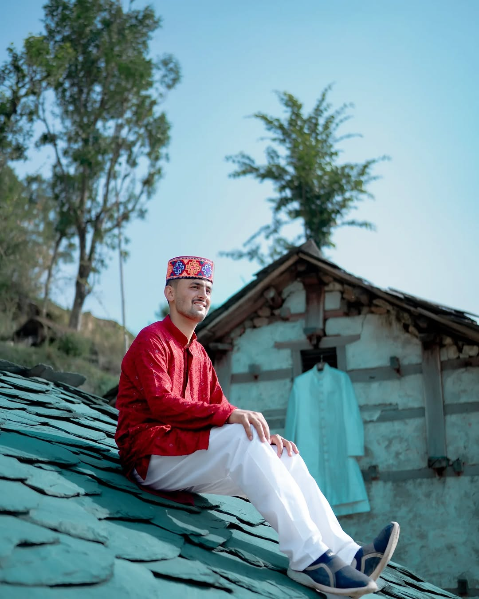

Highlights, teasers, traditional videos, wedding stories and emotional long-form films.
Cinematic Editing Solan
Professional Editing That Feels Like Cinema
Jamallta Films turns raw footage into cinematic stories with clean pacing, emotion, color, audio balance and premium export quality for weddings, creators, musicians and local businesses.

Editing work we handle
Reels, YouTube edits, shorts, subtitles, thumbnails and social-first pacing.
Cinematic color grading, skin-tone balance, audio cleanup, music pacing and exports.
Turn Moments Into Movies
Serving Solan, Shimla, Chandigarh aur pure India. 100% professional quality, no fake promises.
View Packages